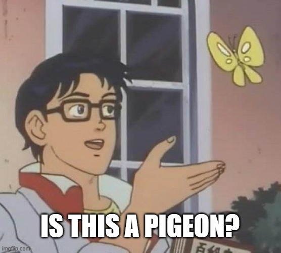

We started our collaboration after discovering a considerable overlap between our research topics. For instance, as Noam began querying how eels might perceive human sex, Sarah was investigating anthropocentric visualisations of shrimp intercourse. We share a common criticism on the exploitative and profit-driven relationship between humans and some aquatic species, that we would like to explore in Show me Love, our first collaborative project. Humans are pervertedly fascinated by the intimate life of other species by the normative motivations. Can we take the eel’s and shrimp’s perspective on things also into account? Go back.
